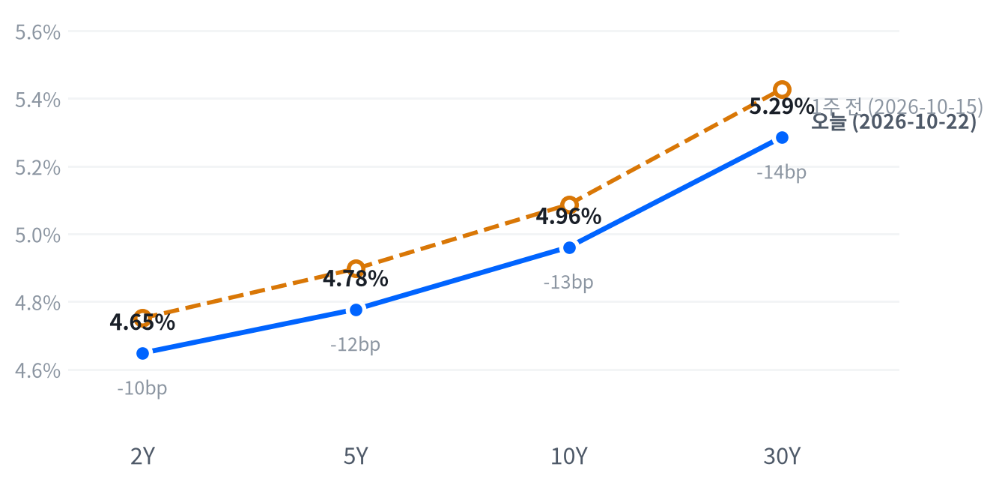

메타의 3분기 잉여현금흐름 적자가 AI 설비투자의 자금 조달 부담을 드러내 반도체·AI 인프라 관련주가 급락했다. 지수는 소수 대형 기술주가 끌어내렸고, 방어 업종은 올라 평균적인 종목은 지수를 따라 내리지 않았다.
국채금리는 전 구간에서 15bp 넘게 내렸고, 12월 인상 확률이 장중 크게 낮아졌다는 전언이 나왔다. 이 하락이 정책 경로의 재가격인지 일시적 피난 수요인지는 10월 27일 주가 회복 여부와 2년물 종가로 확인한다.
메타 실적 뒤 AI 공급망 매도가 이날 시장을 주도했다. 메타는 2026년 설비투자 범위의 하단을 올렸지만 분기 설비투자가 영업현금흐름을 넘어 잉여현금흐름이 적자로 돌아섰고, 반도체·광학·전력 장비가 한꺼번에 팔려 나스닥이 2.60% 내렸다. 같은 날 국채 2년물 금리는 17.5bp 급락했다.
AI 관련주의 가격을 정하는 변수가 설비투자의 규모에서 그 돈을 대는 현금흐름과 차입 여력으로 옮겨 갔다고 판단한다. 수요를 확인한 날 공급망 전체가 내렸고, 같은 날 코어위브의 5년 CDS가 1,145bp까지 넓어졌다는 보도가 나왔다. 대부분의 증권사는 메타 목표가를 올려 셀사이드 전망과 가격은 반대로 움직였다. 가장 강한 반론은 유가 급등과 금리 급락이 겹친 위험회피 매도이고, 이번 주 초 반등분을 되돌린 포지션 정리일 수도 있다. 시장이 옵션 등으로 어느 정도의 하락을 가격에 담았는지는 측정하지 못해 기대와의 차이는 알 수 없다. 금리 쪽에서는 12월 인상 확률이 장중 크게 내려갔다는 전언이 있지만 종가 확률은 확인되지 않았다.
반도체·AI 인프라·전력망 테마는 3개월 상대수익률이 더 악화됐고, 메타 결과가 자금 조달 부담을 드러내 이 테마들이 회복하려면 하이퍼스케일러가 설비투자와 함께 현금흐름 여력을 보여 줘야 한다고 본다. 필수소비재(+3.31%) 같은 방어 업종의 강세는 하루치 증거다. 2년물 하락이 피난 수요라면 주가가 회복할 때 금리와 함께 되돌려질 수 있어, 방어 업종과 단기 금리에 대한 판단은 10월 27일 확인 전까지 보류한다. 이날은 새 아이디어를 내지 않는다. 전력망 테마는 10월 28일 GE 버노바 실적 전이라 판단을 미룬다.
10월 27일 나스닥 종가가 10월 21일 종가 이상으로 회복된 경우, 같은 날 네이버 2년물 종가가 4.698% 이하이면 2년물 하락을 12월 인상 경로의 재가격으로 본 판단이 지지된다. 같은 조건에서 2년물 종가가 4.736% 이상이면 판단은 약해지고 피난 수요를 우선 설명으로 본다. 하이퍼스케일러 실적에서 설비투자 상향과 함께 AI 인프라가 시장을 뚜렷이 웃돌면 자금 조달 부담 해석도 약해진다. 다음 분기점은 10월 23일 미시간대 소비자심리, 27일 신규주택 판매, 28일 GE 버노바 실적과 FOMC다.
출처: CNBC, Finbold
| 지수 | 종가 | 등락률 | 기준일 |
|---|---|---|---|
| 닛케이225 | 64,621.24 | +0.85% | 10월 21일 |
| 항셍 | 23,651.87 | -0.90% | 10월 21일 |
| 상해종합 | 3,713.03 | -0.60% | 10월 21일 |
| DAX | 25,645.04 | +1.35% | 10월 21일 |
| FTSE100 | 10,725.03 | -0.26% | 10월 22일 |
| 유로스톡스50 | 6,207.52 | +1.40% | 10월 21일 |
| VIX | 19.03 | +14.09% | 10월 22일 |
FTSE100과 VIX는 10월 22일 값이고, 나머지는 들어온 마지막 종가인 10월 21일 값이다.
유럽은 미국과 엇갈렸다. 들어온 마지막 종가로 유럽 세 지수는 평균 0.83% 올랐지만 미국은 기술주 중심으로 내렸고, 22일 종가가 들어온 FTSE100은 0.26% 내려 지역 안에서도 갈렸다. 아시아는 평균 0.22% 내려 미국과 같은 방향이었지만 닛케이가 오르고 항셍·상해종합이 내려 역시 지역 안에서 갈렸다. 표의 아시아 종가는 21일 값이라, 22일 아시아 장에서 AI 관련주가 크게 내렸다는 보도는 표에 들어 있지 않다.
야간 선물은 전일 장 마감 무렵이 고점이었고 새벽에 저점을 찍었다. S&P 선물(ES)은 전일 16:00(ET) 7,806에서 05:30 7,710까지, 나스닥 선물(NQ)은 05:00 29,417까지 밀렸다. 그사이 아시아 장의 AI 관련주 매도가 먼저 나왔다. 현물은 S&P -0.81%, 나스닥 -1.53%, 러셀2000 -0.36%의 갭으로 하락 출발했다.
평균적인 종목은 지수를 따라 내리지 않았다. 참여도는 소수가 끌어내림이었다. 동일가중 S&P에서 시총가중 지수(SPY -1.18%)를 뺀 수익률 차이가 +1.91%p로, 지수 하락은 대형 기술주 몇 개에 몰려 있었다. 마감 위치도 갈렸다. 나스닥은 저점권에서, 러셀2000은 고점권에서 끝났고 S&P는 하루 범위의 중간에서 마감했다.
저점권·고점권 경계는 최근 2,259거래일의 일간 종가 위치 이력으로 다시 잰 기준이다.
메타 실적이 AI 공급망 전체를 끌어내린 날이다. 메타가 잉여현금흐름 적자로 내리자 반도체·광학·전력 장비가 함께 팔렸고, 매도 자금이 필수소비재·유틸리티·헬스케어 같은 방어 업종과 국채로 옮겨 갔다는 해석이 나왔다. 유가 급등은 에너지 업종을 받치지 못했다. 장 마감 뒤 웨스턴디지털은 컨센서스를 웃도는 회계 1분기 실적을 냈고, OpenAI가 최대 300억 달러 조달을 막바지 협상 중이라는 보도가 나왔다. 둘 다 정규장 마감 뒤라 이날 가격에는 반영되지 않았다.
출처: AP, Globe and Mail, CNBC, 24/7 Wall St
| 지수 | 종가 | 등락률 |
|---|---|---|
| S&P500 가치주 | 239.47 | +0.60% |
| 러셀2000 | 2,784.03 | +0.11% |
| 다우존스 | 52,867.98 | +0.02% |
| S&P500 | 7,663.43 | -1.21% |
| 나스닥 | 26,008.86 | -2.60% |
| S&P500 성장주 | 137.20 | -2.69% |
| 섹터 | 등락률 |
|---|---|
| 필수소비재 | +3.31% |
| 유틸리티 | +2.07% |
| 헬스케어 | +1.32% |
| 부동산 | +1.09% |
| 금융 | +1.09% |
| 소재 | +0.72% |
| 경기소비재 | -0.45% |
| 에너지 | -0.87% |
| 산업재 | -0.94% |
| 커뮤니케이션서비스 | -1.42% |
| 기술 | -3.29% |
AI 공급망 매도에 나스닥이 2.60% 내린 26,009로 마감했다. S&P500은 1.21% 내린 7,663으로 7월 이후 가장 크게 내린 날이라는 보도가 나왔지만, 최근 2년(504거래일) 가운데 이보다 높았던 날이 43일뿐인 높은 자리다. 다우(+0.02%)와 러셀2000(+0.11%)은 제자리였고, 성장주(-2.69%)와 가치주(+0.60%)는 3%p 넘게 벌어졌다.
하락의 출발점은 메타다. 메타는 3분기 매출이 646억 달러로 26% 늘었지만, 분기 설비투자 약 350억 달러가 영업현금흐름 약 330억 달러를 넘어 잉여현금흐름이 21.2억 달러 적자로 돌아섰다. 2012년 이후 첫 적자이고, 주가는 6.98% 내렸다. 반도체 장비에서는 램리서치가 공급 제약으로 12월 분기 매출 가이던스를 86억 달러로 묶어 9% 안팎 내렸다는 보도가 나왔다. 하이퍼스케일러의 설비투자가 현금흐름을 넘어선 데다 공급 쪽 병목까지 겹쳐, 공급망 매출이 얼마나 오래 이어질지를 시장이 다시 따졌다고 본다.
장중에는 반등이 없었다. 나스닥은 개장가 부근이 그날 고점이었고 오후 내내 밀려 시가보다 1.43% 낮은 저점에서 거의 끝났다. 엔비디아도 같은 궤적으로 시가보다 2.75% 낮은 곳까지 밀렸다. 반대로 러셀2000은 장 초반 저점 뒤 꾸준히 올라 대형 기술주와 정반대 궤적을 그렸다. 오후에 광학주 낙폭이 커졌다는 보도가 있지만, 장중 흐름을 바꾼 별도 재료는 확인되지 않았다.
지수 하락은 거의 기술 업종 혼자 만들었다. 추정 기여도로 기술이 -1.11%p, 커뮤니케이션이 -0.18%p를 덜어냈고, 헬스케어·금융·필수소비재가 각각 0.12%p, 유틸리티가 0.09%p를 보탰다. 업종 합으로 설명되지 않는 부분은 -0.23%p다. 에너지 업종은 유가가 오른 날에도 0.87% 내렸다.
추정 기여도는 업종 비중을 직접 받지 않아, 최근 252거래일 지수·업종 수익률로 추정한 비중을 곱한 값이다. 소재와 부동산은 비중을 추정할 수 없어 빠졌다.
VIX가 14.09% 뛰었지만 19.03은 한가운데쯤 수준이다. 매도가 AI 하드웨어와 대형 기술주에 몰렸고 방어 업종과 소형주가 버텨, 시장 전반의 위험회피로 번졌다고 보기는 이르다고 판단한다.
출처: CNBC, AP, 24/7 Wall St
| 만기 | 종가(10월 22일) | 전일比(bp) | 1주 전(10월 15일) | 주간 변화(bp) |
|---|---|---|---|---|
| 2Y | 4.648% | -17.5 | 4.751% | -10.3 |
| 5Y | 4.777% | -19.3 | 4.897% | -12.0 |
| 10Y | 4.961% | -18.5 | 5.087% | -12.6 |
| 30Y | 5.286% | -15.1 | 5.428% | -14.2 |
AI 주식 매도가 국채로 번져 금리가 전 구간에서 15bp 넘게 내렸다. 10년물은 18.5bp 내린 4.961%로 5% 아래로 내려왔고, 2년물은 4.648%, 30년물은 5.286%로 끝났다. 10년물은 그래도 최근 2년(504거래일) 가운데 이보다 높았던 날이 28일뿐인 고점권에 있다.

네이버 국채 종가, 전 만기 10월 22일 기준. 1주 전(10월 15일)과 비교하면 2년물은 10.3bp, 30년물은 14.2bp 내려 장기물이 더 내린 불 플래트닝이다. 10년물 하루 변화는 최근 60거래일 평균 하루 변화폭의 4.34배다(야후 10년물 지수 기준).
하루로는 5년물이 가장 많이 내린 중간 구간 주도의 강세였다. 2s10s는 31.3bp로 1.0bp 좁아져 소폭 평탄해졌지만, 30년물이 덜 내려 5s30s는 50.9bp로 4.2bp 넓어졌다. 한 주로 보면 장기물이 더 내린 불 플래트닝이다.
금리를 끌어내린 것은 지표가 아니라 주식시장이었다. 08:30(ET) 신규 실업수당 청구가 예상보다 적어 금리를 올릴 재료였는데도, AI 지출 우려로 주식이 팔리며 안전자산 수요가 국채로 몰렸다는 보도가 나왔다. 정책 기대도 함께 움직였다. 12월 인상 확률이 장중 크게 내려갔다는 집계가 나왔고, ING는 장 전에 에너지 가격 상승이 더 이상 영구적 고금리를 뜻하지 않고 장기물이 성장 우려를 반영하기 시작했다고 썼다. 피난 수요와 정책 재가격 가운데 어느 쪽이 더 컸는지는 주가가 회복될 때 2년물이 되돌아가는지로 확인한다.
기대인플레는 만기별로 반대로 움직였다. 10월 22일 FRED 기준 5년 기대인플레는 2.45%로 올랐지만, 장기 쪽은 내려 5년 뒤 5년 기대인플레가 15bp 떨어졌다. 유가가 단기 물가 보상을 올리는 동안 장기 물가 보상은 성장 둔화 쪽으로 내려갔다고 본다. 위험·유동성 프리미엄도 섞인 값이다. 같은 날 실질금리는 아직 나오지 않아, 10년물 명목 하락에서 실질금리 몫은 다음 갱신에서 확인된다. 하이일드 스프레드는 10월 21일 3.27%로 하루 6bp 좁아졌고, 22일 값은 아직 없다.
5년 뒤 5년 명목금리 5.31%, 실질 2.97%(10월 21일 기준). 기대인플레 쪽 수치와의 교차검증은 할 수 없었고, 위험 프리미엄이 섞인 값이다.
출처: CNBC, Globe and Mail
| 통화쌍 | 종가 | 등락률 | 기준일 |
|---|---|---|---|
| DXY | 101.631 | -0.06% | 10월 22일 |
| USD/KRW | 1,325.86 | +0.01% | 10월 22일 |
| USD/JPY | 156.867 | -0.84% | 10월 22일 |
| EUR/USD | 1.1220 | -0.16% | 10월 22일 |
금리가 크게 내렸는데도 달러는 거의 움직이지 않았다. 달러지수는 0.06% 내린 101.631, 유로/달러는 1.1220으로 마감했다. 엔화만 강해져 엔/달러가 0.84% 내린 156.867엔이 됐다. 원/달러는 1,326원으로 전일과 사실상 같았고, 이보다 낮았던 날이 하루뿐인 자리에 머물렀다.
미국 2년물 금리가 17.5bp 내려 금리차는 달러를 누르는 쪽으로 움직였지만, 주식 매도로 안전자산 수요가 늘어 달러를 받쳤다고 본다. 두 힘이 상쇄되면서 달러지수는 제자리였고, 위험회피와 미국 금리 하락이 같은 방향으로 작용하는 엔화만 올랐다. 엔/달러는 뉴욕 개장 전인 07:00(ET)에 그날 저점을 찍어, 엔화 강세는 아시아 장에서 AI 관련주가 크게 내린 시간대에 이미 나왔다.
원/달러의 위치는 최근 2년(504거래일) 종가 기준이다. 환율은 뉴욕 16:00 ET 가격, 전 거래일 같은 시각 대비다.
| 품목 | 종가 | 등락률 |
|---|---|---|
| WTI | $99.39 | +1.73% |
| Brent | $113.12 | +3.17% |
| 천연가스 | $2.786 | +0.40% |
| 금 | $4,044.40 | -2.60% |
유가가 오르고 금이 급락했다. 브렌트는 3.17% 오른 113.12달러로 5월 이후 가장 높다는 보도가 나왔고, WTI는 1.73% 오른 99.39달러로, 최근 2년(504거래일) 가운데 이보다 높았던 날이 29일뿐이다. 금은 2.60% 내린 4,044달러, 천연가스는 0.40% 오른 2.786달러였다.
금은 금리가 크게 내린 날 오히려 떨어졌다. 아시아 시간에 그날 고점을 찍은 뒤 미국 장 내내 밀려, 시가보다 1.72% 낮은 저점 부근에서 마감했다. 미국 장 전에는 중동 에너지 충격이 연준의 매파적 전망을 굳혀 금이 4,100달러 아래로 내렸다는 분석이 나왔고, 장 후반에는 안전자산 수요가 금에서 미국 국채로 옮겨 갔다는 해석이 나왔다. 두 설명 모두 근거가 제시되지 않아 원인은 확인되지 않았다. 최근 60거래일 동안 금과 금리는 거의 따로 움직여, 금리 하락이 금을 받친다는 전제가 이날 통하지 않은 것 자체는 이례적이지 않다.
유가는 사우디 공급 불안이 밀어 올렸다. 후티 드론 잔해가 사우디 샤이바 유전 인근 차량을 덮쳐 2명이 숨졌고(생산 차질은 없었다), 미국은 사우디 내 비필수 인력의 철수를 지시했다. 이란 혁명수비대는 호르무즈에서 유조선 7척이 피해를 입었다고 주장했지만 독립 검증은 없었고, 미 중부사령부는 이를 반박했다. WTI는 11:00(ET) 저점 뒤 오후 한때 100달러를 넘었다. 브렌트가 더 올라 두 유종의 가격 차는 13.73달러로 전일(11.94달러)보다 벌어졌다. 유가가 올랐는데 금리가 내린 것은 최근 몇 달 동안 유가와 금리가 함께 오르던 관계와 다르다는 지적이 나왔다.
최근 60거래일 동안 열 개 자산의 움직임 가운데 가장 큰 공통 요인은 전체의 41.0%를 설명하고, 여전히 주식이 이끈다. 이 요인과 함께 움직이는 자산군은 직전 60거래일의 금리에서 원자재로 바뀌었다. 유가가 금리를 제치고 주식과 같은 공통 요인에 묶여 움직이는 구간이라는 뜻이다.
WTI의 위치는 최근 2년(504거래일) 종가 기준이다. 원자재·환율은 뉴욕 16:00 ET 가격, 전 거래일 같은 시각 대비다. 결제가와 다를 수 있다.
출처: AP, FXStreet, Rigzone, Al Jazeera, Globe and Mail
미국 경기 국면은 성장 보합·물가 교착인 교착을 10월 14일부터 7영업일째 유지한다. 새로 나온 경제지표는 주간 실업수당 청구뿐이고, 성장 점수 0.007과 물가 점수 0.017은 어느 쪽으로도 기울 만큼은 아니어서 지금의 교착을 그대로 가리킨다. 성장 좌표는 11월 6일 10월 고용이 다시 점검한다.
고용은 미미한 개선을 유지한다(7개 중 4개). 신규 청구가 낮은 수준을 지켰고 계속 청구의 4주 평균도 뚜렷이 내려왔지만, 9월 비농업 고용과 임금 둔화는 반대쪽에 남아 있다. 고용축 +0.297
| 지표 | Actual | Forecast | Previous | 발표일 | 컨센 대비 | 직전 대비 | 추세 |
|---|---|---|---|---|---|---|---|
| 신규 실업수당 청구 | 194,000 | 200,000 | 200,000 | 2026-10-22 (10월 17일 주간) | 하회▼ | 개선 | 개선(미미) · 4주 평균 202K → 198K |
| 신규 청구 4주 평균 | 197,750 | — | 198,750 | 2026-10-22 (10월 17일 주간) | 개선 | 개선(완만) · 4주 평균 205K → 199K | |
| 계속 실업수당 청구 | 1,728,000 | 1,720,000 | 1,703,000 | 2026-10-22 (10월 10일 주간) | 상회▲ | 악화 | 개선(뚜렷) · 4주 평균 1,742K → 1,711K |
| 비농업 고용 변화(9월) | +29K | — | +133K | 2026-09 기준월 | 악화 | 악화(미미) · 3개월 평균 +81K → +51K | |
| 실업률(9월) | 4.2% | — | 4.1% | 2026-09 기준월 | 악화 | 개선(미미) · 3개월 평균 4.27% → 4.13% | |
| 평균시간당임금 MoM(9월) | +0.13% | — | +0.32% | 2026-09 기준월 | 악화 | 악화(미미) · 3개월 평균 +0.21% → +0.19% | |
| 구인건수(8월) | 7,079K | — | 7,335K | 2026-08 기준월 | 악화 | 악화(미미) · 3개월 평균 7,336K → 7,199K |
DOL이 10월 22일 발표한 10월 17일 주간 신규 청구는 194,000건으로, 200,000건으로 상향 수정된 전주보다 6,000건 줄어 컨센서스(20만 건)를 밑돌았다. 계속 청구(10월 10일 주간)는 1728000건으로 25,000건 늘었고, 전주는 7,000건 하향 수정됐다.
원계열 신규 청구는 172,390건으로 10.1% 줄어 계절 요인이 예상한 감소(-7.4%)보다 컸다. 원계열 계속 청구는 1.3% 늘어 계절 요인이 예상한 소폭 감소(-0.2%)와 반대로 움직였고, 전주 급증했던 오하이오·테네시의 신규 청구는 되돌려졌다.
해고는 적고 재취업은 더딘 흐름이 이어진다고 본다. 고용축의 개선을 받치지만 성장 좌표를 움직일 크기는 아니고, 12월 인상 쪽 재료였는데도 이날 금리는 반대로 움직였다.
| 지표 | Actual | Forecast | Previous | 발표일 | 컨센 대비 | 직전 대비 | 추세 |
|---|---|---|---|---|---|---|---|
| 산업생산 MoM(9월) | +0.66% | — | +0.06% | 2026-09 기준월 | 개선 | 보합 · 3개월 평균 +0.40% → +0.32% | |
| 내구재주문 MoM(8월) | -0.07% | — | +0.87% | 2026-08 기준월 | 악화 | 악화(완만) · 3개월 평균 +1.95% → +0.46% | |
| 신규주택판매(8월) | 684K | — | 643K | 2026-08 기준월 | 개선 | 개선(미미) · 3개월 평균 645K → 666K | |
| 기존주택판매(9월) | 399만 | — | 393만 | 2026-09 기준월 | 개선 | 악화(뚜렷) · 3개월 평균 4,120K → 3,993K | |
| 실질GDP QoQ 연율(2분기) | +2.2% | — | +2.5% | 2026년 2분기 기준 | 악화 | — |
| 지표 | Actual | Forecast | Previous | 발표일 | 컨센 대비 | 직전 대비 | 추세 |
|---|---|---|---|---|---|---|---|
| 소매판매 MoM(9월) | +0.77% | — | +1.29% | 2026-09 기준월 | 악화 | 보합 · 3개월 평균 +0.61% → +0.55% | |
| 미시간대 소비자심리(8월) | 51.7 | — | 55.2 | 2026-08 기준월 | 악화 | 개선(미미) · 3개월 평균 49.3 → 52.1 |
| 지표 | Actual | Forecast | Previous | 발표일 | 컨센 대비 | 직전 대비 | 추세 |
|---|---|---|---|---|---|---|---|
| CPI YoY(9월) | 3.72% | — | 3.35% | 2026-09 기준월 | 상승 | 둔화(미미) · 3개월 평균 3.80% → 3.46% | |
| CPI MoM(9월) | +0.65% | — | +0.40% | 2026-09 기준월 | 상승 | 재가속(완만) · 3개월 평균 +0.23% → +0.37% | |
| Core CPI YoY(9월) | 2.57% | — | 2.45% | 2026-09 기준월 | 상승 | 둔화(미미) · 3개월 평균 2.71% → 2.49% | |
| Core CPI MoM(9월) | +0.33% | — | +0.29% | 2026-09 기준월 | 상승 | 재가속(완만) · 3개월 평균 +0.19% → +0.28% | |
| PPI 최종수요 MoM(9월) | +1.34% | — | +0.47% | 2026-09 기준월 | 상승 | 재가속(완만) · 3개월 평균 +0.49% → +0.66% | |
| PCE 물가 YoY(8월) | 3.42% | — | 3.36% | 2026-08 기준월 | 상승 | 둔화(미미) · 3개월 평균 3.59% → 3.41% | |
| Core PCE YoY(8월) | 3.01% | — | 2.98% | 2026-08 기준월 | 상승 | 둔화(미미) · 3개월 평균 3.12% → 3.01% | |
| 미시간대 1년 기대인플레(8월) | 4.0% | — | 4.2% | 2026-08 기준월 | 하락 | 교착 · 3개월 평균 4.43% → 4.27% |
직전 대비는 Actual을 Previous와 비교한 것이고, 추세는 최근 3개월 평균을 그 앞 3개월 평균과 비교한 것입니다(주간 실업수당 청구는 4주 평균끼리). 추세의 세기는 그 지표가 평소 움직이는 폭에 견준 크기이고, 작은 변화는 보합으로 봅니다. 분기 지표인 GDP는 두 비교가 같은 숫자를 보므로 직전 대비만 싣습니다.
연준의 다음 금리 변경은 12월 9일 FOMC의 25bp 추가 인상이라는 판단을 유지하지만, 근거는 이날 약해졌다. CME FedWatch를 전한 장중 집계 한 곳은 12월 인상 확률이 약 89%에서 67.6%로 내려갔다고 전했고, 연내 추가 인상이 없을 확률이 10%에서 28%로 올랐다는 집계도 나왔다. 종가 확률은 확인하지 못했고, 67.6%도 과반이라 시점은 12월에 둔다.
10월 27일 FOMC 회의 전까지 CME FedWatch 10월 인상 확률이 장 마감 무렵 기준으로 과반에 올라서면 시점을 10월로 당긴다. 11월 6일 10월 고용에서 실업률이 3월 이후 범위(4.1~4.3%) 위로 올라서면 인상 우위 판단을 철회한다.
자산별 전달경로는 전일과 같다.
08:30(ET) 신규 청구는 컨센서스를 밑돌아 12월 인상 쪽 재료였지만, 국채금리는 종가 기준 전 구간에서 큰 폭으로 내렸다. 일간 종가만 있어 발표 직후 반응은 알 수 없다. 이날 금리는 지표보다 AI 주식 매도와 정책 기대 변화가 움직였다고 본다. 제프리스의 이코노미스트는 노동시장이 안정적이라고 평가했다.
출처: CNBC, FXStreet, CoinDesk
| 지수 | 순위(5거래일 전) | 1개월 | 3개월 | SPY 대비 3개월 | 대비 변화 | 12-1 모멘텀 | 변동성 | 1일 VaR 95% | 베타 | 50/200일선 | 52주 고점 대비 |
|---|---|---|---|---|---|---|---|---|---|---|---|
| 소프트웨어 IGV | 1(1) | +0.6% | +23.6% | +19.9%p | +5.9%p | -6.0% | 33.9% | 2.6% | 1.89 | 위/위 | -7.1% |
| 에너지 XLE | 2(2) | +8.3% | +14.0% | +10.4%p | -1.6%p | +48.0% | 21.0% | 1.7% | -0.52 | 위/위 | -1.0% |
| 경기소비재 XLY | 6(15) | +3.9% | +5.3% | +1.7%p | +7.3%p | -6.7% | 16.6% | 1.5% | 1.00 | 위/아래 | -7.1% |
| 초대형주 Top 50 XLG | 7(5) | -2.0% | +4.4% | +0.8%p | -0.5%p | +10.7% | 13.6% | 0.9% | 1.22 | 아래/위 | -3.9% |
| 금융 XLF | 10(14) | +3.9% | +1.0% | -2.7%p | +2.8%p | +5.1% | 12.2% | 1.2% | 0.47 | 위/위 | -2.9% |
| 은행 KBE | 14(23) | +2.0% | -4.5% | -8.2%p | +4.9%p | +15.5% | 15.3% | 1.4% | 0.39 | 아래/위 | -7.6% |
| 소형주 IWM | 15(20) | -1.9% | -4.7% | -8.4%p | +1.9%p | +15.3% | 14.1% | 1.4% | 0.98 | 아래/아래 | -9.1% |
| 금속·광업 XME | 16(8) | -11.8% | -5.0% | -8.6%p | -7.7%p | +9.6% | 36.0% | 3.7% | 2.05 | 아래/아래 | -27.2% |
| 모멘텀 팩터 MTUM | 17(12) | -8.9% | -5.6% | -9.3%p | -5.2%p | +25.8% | 24.7% | 2.6% | 1.62 | 아래/위 | -16.2% |
| 소형 성장 IWO | 18(22) | -3.7% | -6.1% | -9.8%p | +1.9%p | +10.1% | 18.6% | 2.0% | 1.36 | 아래/아래 | -12.2% |
| 반도체·AI 하드웨어 SMH | 20(11) | -13.0% | -6.7% | -10.4%p | -6.7%p | +74.7% | 36.9% | 4.0% | 2.43 | 아래/위 | -21.8% |
| 전력망 GRID | 21(17) | -8.9% | -7.8% | -11.5%p | -4.3%p | +17.0% | 25.9% | 2.7% | 1.72 | 아래/아래 | -17.8% |
| 주택건설 XHB | 22(25) | +2.2% | -8.0% | -11.7%p | +3.5%p | -10.9% | 25.1% | 2.3% | 1.00 | 아래/아래 | -17.4% |
| 산업재 XLI | 24(19) | -2.0% | -8.5% | -12.1%p | -1.9%p | +11.1% | 13.6% | 1.4% | 0.83 | 아래/아래 | -10.4% |
| 방산 ITA | 25(24) | -4.4% | -14.8% | -18.4%p | -4.1%p | +0.5% | 17.6% | 2.1% | 0.74 | 아래/아래 | -19.1% |
| 지수 | 순위(5거래일 전) | 1개월 | 3개월 | SPY 대비 3개월 | 대비 변화 | 12-1 모멘텀 | 변동성 | 1일 VaR 95% | 베타 | 50/200일선 | 52주 고점 대비 |
|---|---|---|---|---|---|---|---|---|---|---|---|
| 헬스케어 XLV | 3(3) | +7.4% | +11.9% | +8.3%p | +2.0%p | +18.2% | 17.4% | 1.4% | -0.03 | 위/위 | 0.0% |
| 필수소비재 XLP | 4(9) | +9.2% | +7.7% | +4.0%p | +5.7%p | +6.8% | 15.7% | 1.4% | -0.31 | 위/위 | 0.0% |
| 배당 SCHD | 5(6) | +6.4% | +7.2% | +3.5%p | +3.2%p | +27.2% | 11.5% | 1.0% | 0.04 | 위/위 | 0.0% |
| 퀄리티 팩터 QUAL | 8(7) | +1.1% | +3.8% | +0.2%p | 0.0%p | +14.3% | 9.0% | 0.7% | 0.76 | 위/위 | -1.4% |
| 저변동성 SPLV | 11(18) | +7.0% | -0.8% | -4.4%p | +2.9%p | +0.1% | 10.4% | 1.0% | -0.08 | 위/위 | -1.7% |
| 유틸리티 XLU | 19(21) | +7.8% | -6.7% | -10.3%p | +0.9%p | -9.8% | 15.6% | 1.4% | 0.06 | 위/아래 | -8.3% |
| 지수 | 순위(5거래일 전) | 1개월 | 3개월 | SPY 대비 3개월 | 대비 변화 | 12-1 모멘텀 | 변동성 | 1일 VaR 95% | 베타 | 50/200일선 | 52주 고점 대비 |
|---|---|---|---|---|---|---|---|---|---|---|---|
| 일본 EWJ | 9(4) | -2.5% | +3.7% | +0.1%p | -1.3%p | +22.6% | 18.4% | 1.3% | 1.24 | 아래/위 | -4.8% |
| 유럽 VGK | 12(13) | -1.4% | -1.6% | -5.2%p | +0.2%p | +12.4% | 12.2% | 1.2% | 0.75 | 아래/아래 | -6.6% |
| 신흥국 EEM | 13(10) | -8.8% | -2.5% | -6.2%p | -3.1%p | +27.1% | 22.1% | 2.2% | 1.53 | 아래/아래 | -13.3% |
| 중국 MCHI | 23(16) | -7.8% | -8.1% | -11.7%p | -5.2%p | -14.6% | 15.7% | 1.8% | 0.65 | 아래/아래 | -23.9% |
| 지수 | 순위(5거래일 전) | 1개월 | 3개월 | SPY 대비 3개월 | 대비 변화 | 12-1 모멘텀 | 변동성 | 1일 VaR 95% | 베타 | 50/200일선 | 52주 고점 대비 |
|---|---|---|---|---|---|---|---|---|---|---|---|
| S&P 500 SPY | – | -0.5% | +3.6% | 0.0%p | – | +15.6% | 10.8% | 0.8% | 1.00 | 아래/위 | -1.9% |
| S&P 500 동일가중 RSP | – | +3.3% | +2.6% | -1.1%p | – | +12.5% | 10.0% | 0.8% | 0.58 | 위/위 | -1.7% |
| 나스닥 100 QQQ | – | -5.0% | +3.1% | -0.6%p | – | +21.8% | 18.8% | 1.7% | 1.61 | 아래/위 | -7.3% |
가격 기준 시장 국면은 강세이고, 7월 31일 횡보에서 넘어온 뒤 59거래일째다. 이날 SPY가 763.96으로 50일선(767.22) 아래에서 끝나 그날 조건은 횡보를 가리켰고, 이런 날이 3거래일 이어지면 국면이 횡보로 바뀐다. 52주 고점과의 거리는 1.94%라 단기 약세 조건과는 멀다.
반도체·AI 하드웨어의 3개월 상대수익률이 한 주 사이 크게 악화됐다. 순위는 11위에서 20위로 밀렸고, SPY 대비 3개월 상대수익률은 6.71%p 나빠진 -10.39%p다. 전력망도 17위에서 21위로 내려가 상대수익률이 4.34%p 줄어든 -11.47%p가 됐다. 반대로 필수소비재는 9위에서 4위로 올라 상대수익률이 5.70%p 개선된 +4.02%p다. 지난주 AI 하드웨어 매도에 이날 메타 실적 뒤 매도가 더해졌고, 그사이 방어 업종이 강해졌다.
위험 지표는 엇갈렸다. VIX는 19.03으로 올랐지만 아직 높은 수준은 아니고, 하이일드 스프레드는 10월 21일까지 5거래일 사이 2bp 넓어지는 데 그쳤다. 10년 실질금리는 같은 기간 8bp 내렸다. 순유동성은 4주 사이 늘었지만 금융여건지수는 조금 조여져 유동성 방향은 중립이다. 22일 신용 스프레드가 나오면 코어위브 CDS 확대가 하이일드 전반으로 번졌는지 확인할 수 있다.
엔비디아(-4.4%)·마이크론(-6.26%)·AMD(-8.1%)·인텔(-8.04%)·마벨(-8.7%)은 반도체·AI 하드웨어 관련주의 약세를 키운 종목들이다. 메타 실적 뒤 AI 지출과 자금 조달 우려에, 램리서치의 공급 제약 가이던스와 유가 급등이 겹쳐 반도체 전반이 팔렸다는 보도가 나왔다. 인텔·AMD의 회사 고유 재료는 확인되지 않았다.
메타(-6.98%)와 알파벳(-3.15%)은 커뮤니케이션 업종 하락을 이끌었다. 메타는 잉여현금흐름 적자와 함께 의결권 없는 C종 보통주 신설도 공개했다. 알파벳의 고유 재료는 확인되지 않았다.
애플(+1.23%)은 지수 기여 상위 종목으로 대형 기술주 안에서 하락을 일부 덜어냈다. 확인된 재료 없음.
일라이 릴리(+2.83%)는 헬스케어 업종의 강세를 받친 종목으로, 방어 업종 선호와 같은 방향이다. 확인된 재료 없음.
샌디스크(-8.51%)·웨스턴디지털(-6.43%)·시게이트(-7.86%)·델(-6.78%)은 메모리·스토리지 관련주의 약세를 키웠다. 장 전부터 메모리주가 4% 안팎 내렸다는 보도가 나왔고, 업종 고유 재료는 찾지 못해 반도체 매도의 연장으로 본다. 웨스턴디지털은 장 마감 뒤 회계 1분기 매출 43.8억 달러(+55%)와 다음 분기 매출 가이던스 중간값 51억 달러를 냈다. 정규장 하락보다 뒤에 나온 실적이다. 델의 고유 재료는 확인되지 않았다.
AI 인프라 다섯 종목(마벨·코히런트·루멘텀·GE 버노바·버티브)은 최근 20거래일 동안 시장보다 18.73% 뒤처졌다. 그중 반도체 축이 -18.40%p, 성장−가치 축이 -5.33%p, 대형−소형 축이 -0.79%p를 설명하고, 세 축으로 설명되지 않는 몫은 +5.78%p다. 이 묶음의 약세는 반도체 업종 공통의 매도로 거의 다 설명된다고 본다.
하루 초과수익의 20거래일 합이고, 세 축(성장−가치·대형−소형·반도체)의 몫은 최근 60거래일로 추정한 민감도를 곱한 값이다. 시장 베타는 3.475다.
출처: AP, 24/7 Wall St, StockStory, CNBC, Benzinga, TradingKey, TechPowerUp
2년물 하락의 주된 부분을 12월 인상 경로의 재가격으로 본 판단(10월 22일)의 출발점은 이날 네이버 종가 2년물 4.648%다. 10월 23일 개장부터 27일 17:05(ET)까지 정본 종가로 잰다. 10월 27일 나스닥 종가가 10월 21일 종가 이상으로 회복된 경우, 같은 날 네이버 2년물 종가가 4.698% 이하이면 판단이 지지되고 4.736% 이상이면 약해져 피난 수요를 우선 설명으로 본다. 그 사이이거나, 나스닥이 회복하지 못하거나, 그날 종가가 없거나 만기별 기준일이 갈리면 결론을 내지 않는다.
하이퍼스케일러 수요는 온전하고 AI 인프라 약세는 약한 차입자의 신용 문제라고 본 판단(10월 19일)은 결론 없이 닫는다. 그날 2년물이 5bp 넘게 움직이면 판정하지 않기로 미리 정했는데, 2년물이 17.5bp 내렸다. 결과는 판단과 반대 방향이었다. AI 인프라 다섯 종목 단순평균에서 S&P 등락률을 뺀 값은 -9.03%p로 약화 기준(-2.31%p)을 크게 넘었다. 금리 급락과 유가 급등이 겹쳐 그 원인을 수익성 의문 하나로 돌릴 수는 없다.
HDD 2종의 추가 낙폭을 포지션 축소의 고베타 효과로 본 판단(10월 16일)은 23일 종가에서 결론을 낸다. 웨스턴디지털의 다음 분기 매출 가이던스 중간값이 이번 분기 매출을 넘어 가이던스 조건은 충족됐지만, 완판·장기 계약 설명이 유지됐는지는 아직 확인하지 못했다. 23일 종가 기준 웨스턴디지털 1일 수익률에서 마이크론 1일 수익률을 뺀 값이 +3.06%p 이상이면 지지되고 0%p 이하면 약해진다. 장기 계약 설명이 확인되지 않으면 결론을 내지 않는다.
단기물이 12월 인상을 반영해 커브가 평탄해졌다는 판단(10월 21일)은 금리차는 기준 안쪽에 있지만 전제가 흔들렸다. 2s10s는 31.3bp로 지지 기준(32.3bp 이하) 안쪽이다. 그러나 12월 인상 확률이 장중 67.6%까지 내려갔다는 전언이 있어, 10월 28일 FOMC 당일 이 확률이 80% 아래면 미리 정한 규칙대로 결론을 내지 않는다. 같은 날 5s30s는 넓어져 2s10s와 방향이 달랐다.
신용·수익성 우려가 AI 인프라 급락을 이끌었다고 본 판단(10월 14일)은 이날 비교에 들지 않았다. 2년물이 5bp 이상 오른 세션만 재기로 했는데 이날은 크게 내렸다. 정책금리 상승 없이 AI 인프라가 급락하고 코어위브 CDS가 넓어진 것은 이 판단과 같은 방향이지만, 미리 정한 확인 기준 밖의 증거다. 확인 구간은 10월 27일 종가까지다.
헬스케어 강세를 AI 관련주에서 빠진 자금의 반대편으로 본 판단(10월 20일)도 이날은 재지 않았다. AI 인프라가 S&P보다 1.5%p 이상 강한 세션만 재기로 했기 때문이다. 남은 구간은 10월 23일부터 27일 16:00(ET)까지다.
연준 인상 사이클과 AI 자본지출 랠리가 따로 간다는 판단(9월 22일)은 결론을 계속 보류한다. 확인하려면 실질금리가 오르고 금리 민감 업종이 약한 날이 필요한데, 이날은 금리가 내리고 유틸리티·부동산·금융이 올랐다. 기한은 10월 28일 FOMC다.
통신 3사 급락을 장기 가격결정력의 재평가로 본 판단(10월 9일)은 유지한다. 통신 3사의 새 종가 자료와 SpaceX의 새 발표가 없어, 10월 26일 07:00(ET) 베라이즌 3분기 실적에서 다시 확인한다.
출처: TechPowerUp, FXStreet
이 보고서의 시세는 Yahoo Finance와 네이버 국채 종가, 경제지표는 FRED와 각 발표 기관(BLS·BEA·Census 등), 그 밖의 내용은 본문에 밝힌 출처에서 가져왔다. 이 보고서는 투자 자문이 아니며 특정 자산의 매수·매도를 권유하지 않는다. 투자 판단과 그 결과에 대한 책임은 전적으로 투자자 본인에게 있다.